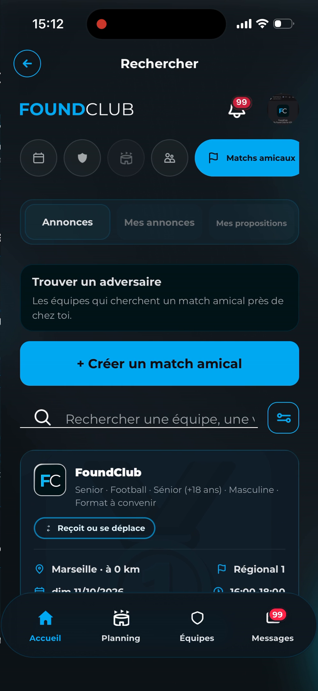

2026
Des coachs qui galèrent
pendant des heures
Vacances de la Toussaint
FC
FOUNDCLUB
Nouvelle fonctionnalité
Matchs amicaux
Trouve un adversairepour ton équipe

Trouve des matchs amicaux
Publie ta propre annonce
Propose un match
Coach, trouve
ton prochain match
Envoie-la à ton coach
FC
FOUNDCLUB
Télécharge FoundClub


foundclub.app
On est en 2026,
et il y a encore des coachs qui galèrent pendant des heures
à trouver un match amical.
Ça tombe bien : les vacances de la Toussaint arrivent,
et on vient d'ouvrir une nouvelle fonctionnalité sur FoundClub.
Maintenant, tu peux directement trouver des matchs amicaux
ou publier ta propre annonce pour trouver des adversaires.
Donc si t'es coach, va sur FoundClub et trouve ton prochain match.
Et si t'es joueur, envoie cette vidéo à ton coach.